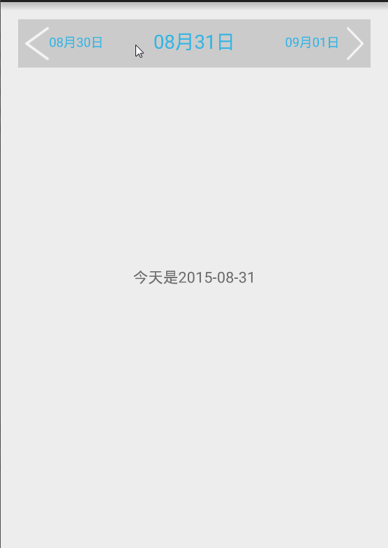
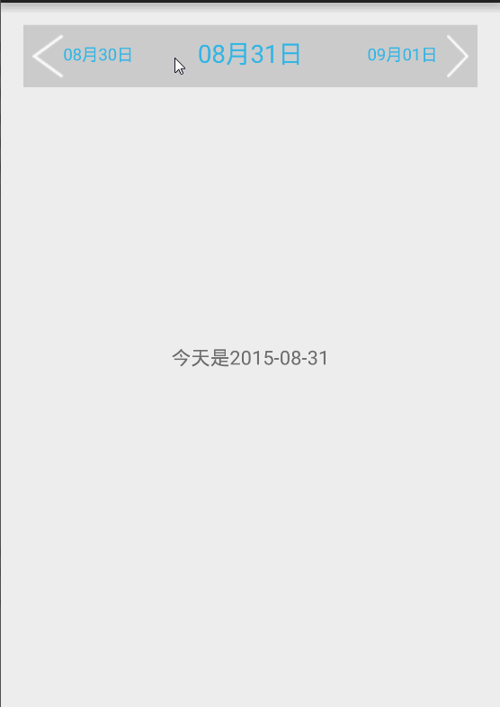

DateView
看到iOS上有个日期横着选择的界面，看起来很好看，自己就写了一个，第一次写只为自己学习，
这个view可以左右滑动选择前一天和后一天 也可点击左右按钮来选择日期，某某孕妇APP上没有滑动选择的功能，所以自己就加上这个滑动选择的功能
效果图

看到iOS上有个日期横着选择的界面，看起来很好看，自己就写了一个，第一次写只为自己学习，
这个view可以左右滑动选择前一天和后一天 也可点击左右按钮来选择日期，某某孕妇APP上没有滑动选择的功能，所以自己就加上这个滑动选择的功能
